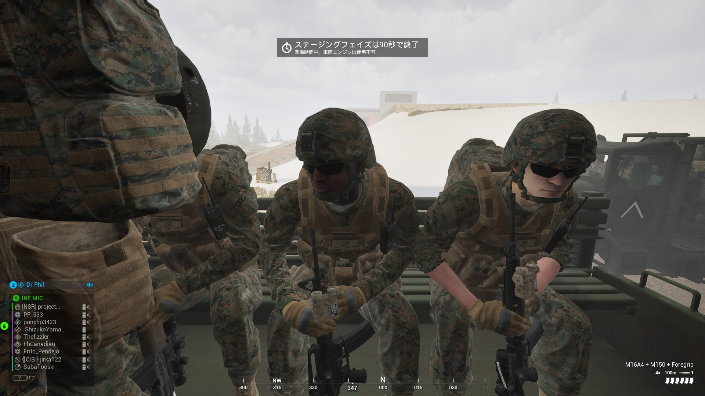

言語の壁は超えられる：『Squad』で英語が苦手でも分隊長（SL）ができた理由
公開日: 2026年3月20日 | カテゴリ: PCゲーム / FPS
大規模タクティカルFPSにおける「指揮」のハードル
50vs50の大規模な連携と無線の飛び交う戦場が魅力のハードコアFPS『Squad』。このゲームの醍醐味は、なんといっても分隊長（Squad Leader / SL）同士の連携と、分隊員への的確な指示です。また、アップデートで追加されたCareerやCommendation Tokenシステムなど、やり込み要素も増えています。しかし、いざ自分が分隊長をやろうとすると、「多国籍なチームで英語が話せないと指揮なんて無理だ」という巨大な言語の壁を感じて萎縮してしまう人が多いのではないでしょうか。私も最初はそうでした。

SLで使う英語フレーズ集（10以上）
戦場で飛び交う報告や指示のほとんどは、決まったフレーズの使い回しです。以下をメモ帳に貼っておけば、英語力中級以下でも回せます。
| フレーズ | 意味・使いどころ |
|---|---|
| Enemy infantry, bearing 120 | 敵歩兵、方角120度 |
| Contact front / left / right | 前方／左／右に接敵 |
| Move to defend mark | 防衛マークへ移動 |
| Need rally point | ラリーポイントが必要 |
| Rally down, move out | ラリー設置完了、前進 |
| FOB is up / FOB is down | FOB設置完了／FOB破壊 |
| Push the point / Hold the point | ポイントを押せ／保て |
| Squad, overwatch | 分隊、監視・援護しろ |
| Suppressing fire | 制圧射撃（味方に指示） |
| Fall back to rally | ラリーまで後退 |
| Can I get a logi run? | 補給車（ロジ）来てくれ（他SLへ） |
| Negative / Roger / Copy | 了解不可／了解／承知 |
マップマーキングのコツ
- 敵は赤、移動先は緑： 色の意味は全サーバー共通。迷子を防ぐ
- 数字マークで優先度： 1→2→3の順に攻めると分隊員が理解しやすい
- 更新を怠らない： 古い敵マークは消す。誤情報は士気を下げる
- FOB位置は控えめに： 全員に見えるため、敵に推測される
FOBとラリーポイントの基本
SLの生命線は「スポーン」です。ラリー（Rally）は小隊単位の仮スポーン。FOB（Forward Operating Base）は大きな前線拠点で、ログイ車両がSupplyを運ぶ必要があります。
- まずラリーを前線付近に置き、分隊員の再突入を確保
- ラリーが5m以内に敵に踏まれると消える——隠れる位置を選ぶ
- FOBは自陣から十分離れた安全な建物内。野原は即破壊される
- FOBが落ちたら「Need logi」と指揮官・他SLに連絡
日本人プレイヤーが英語サーバーで生き残った方法
私は最初、EUサーバーでRifleman（歩兵）として100時間以上「聞くだけ」プレイしました。他SLの指示の流れ、マップマーキングのタイミング、ラジオの混線時の対処——これを観察するだけで、必要な語彙の80%は揃います。マイクは恥ずかしくてもON推奨。「Sorry, my English is bad」で始めれば、大半のプレイヤーは協力的です。
練習パス：Rifleman → FT Lead → SL
| 段階 | 役割 | 身につくスキル |
|---|---|---|
| 1 | Rifleman | マップ読み、ラジオ文化、足音の静けさ |
| 2 | Fire Team Lead | 3〜4人への短い指示、マーキング |
| 3 | Squad Leader | FOB/ラリー、他SL連携、全体判断 |
よくあるSLの失敗
- ラリーを置き忘れる： 全滅＝徒歩5分は致命的
- 一人で前に出すぎる： SLは生きて指示する役。KDを捨てる
- マークなしで口頭だけ： 多国籍パーティでは伝わらない
- 全員に同時命令： FT Leadに委譲して負荷を分散
決まった単語の使い回しで戦場は回る
ネイティブのように流暢な英語で世間話をする必要は全くなく、ゲーム内のセオリーと基本的な単語さえ押さえておけば、分隊長として十分に立ち回ることができました。英語力よりも、「どこにスポーンポイントを置くか」「どのタイミングで攻めるか」といったゲームへの理解度の方が遥かに重要です。
日本語サーバー vs 英語サーバー
日本語サーバーは存在しますが、人口が少なくマッチングに時間がかかることがあります。英語サーバーは常時フルに近く、Career/Commendation Tokenの進行も速い。定型フレーズさえ押さえれば、英語サーバーの方が「ゲームとして」充実していると感じました。最初の20時間はRifleman専念をおすすめします。
言語の壁を恐れず、ぜひ一度分隊長にチャレンジして、Squadの本当の面白さを味わってほしいと思います。
指揮官（Commander）との連携
SLは指揮官の下で動きます。「Roger」「Negative」だけで会話は成立します。攻撃ポイントのマークが降りてきたら、自分の分隊のラリー位置と照合し、無理な突撃は避けましょう。Logi（補給）を要請する際は「Can I get a logi run to [grid]」とグリッド座標を添えると、他SLが助けやすくなります。
SquadのCareerシステムでSL実績を積むと、Commendation Tokenが貯まります。英語が苦手でも、マークと定型フレーズで「役に立つSL」と認識されれば、Commendationは自然と付いてきます。評価は弾数ではなく、ラリー生存率とオブジェクト参加率——これを意識するだけで、英語力不足をカバーできます。
まとめ
SquadのSLは「英語力試験」ではなく「判断力ゲーム」です。12個の定型フレーズ、マップマーク、FOB/ラリーの基本——これだけで英語サーバーの半分は回せます。100時間Rifleman → FT Lead → SLの順で経験を積み、最初から完璧を目指さないでください。言語の壁は、ゲーム理解度が上がれば自然に薄れていきます。
ラジオエチケット：混線を防ぐ基本
Squadの無線は全員が同じチャンネルに喋るため、「誰がいつ話すか」のルールがないと一瞬でカオスになります。SLとして守るべきマナーは以下の通りです。
- 報告は短く： 「Contact east, 150 meters, infantry」——これ以上の修飾は不要
- Push-to-Talk必須： 常時マイクは環境音と咳払いで無線を汚す
- 指揮官優先： Commanderが話している間は他SLは黙る。被せない
- マークと同時報告： 口頭だけでなく、必ずマップに赤マーク。視覚＋聴覚の二重化
- 「Say again」： 聞き取れなければ遠慮なく聞き返す。推測で動かない
分隊内ラジオ（Squad Channel）と指揮官ラジオ（Command Channel）は使い分けます。分隊員への細かい指示はSquad Channel、他SL・Commanderへの報告はCommand Channel——この分離だけで、混線が半減します。
分隊員にミュートされたときの対処法
英語が拙いSLほど、プレイヤーにミュートされる経験があります。私も最初のSLセッションで2人にミュートされ、かなり落ち込みました。ただし、ゲームは続けられます。
ミュートされても機能するSLのやり方
- マップマークを主戦場にする： 移動先（緑）、敵（赤）、FOB候補（黄）をこまめに更新
- テキストチャット（J）を併用： 「Rally up, moving to defend mark」と短く打つ
- FT Leadに委譲： 英語が得意な分隊員がいれば、口頭指示を任せる
- キット構成を見せる： Medic・LATを適切に配置すれば、声がなくても「このSLは分かっている」と思われやすい
長期的には、マイクON＋「Sorry, my English is bad, follow the marks」で始めるのが最善です。大半のプレイヤーは協力的で、定型フレーズが増えるほどミュート率は下がります。逆に、口頭ばかりでマークを更新しないSLは、英語が流暢でもミュートされます。信頼は「声」より「判断」で勝ち取るゲームです。